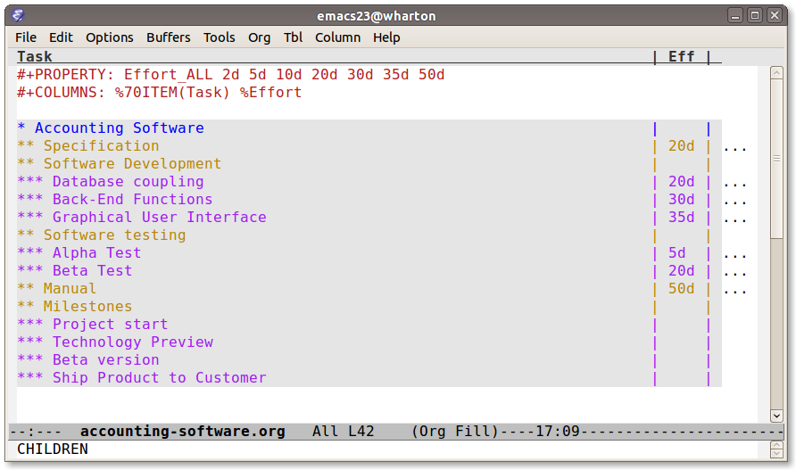
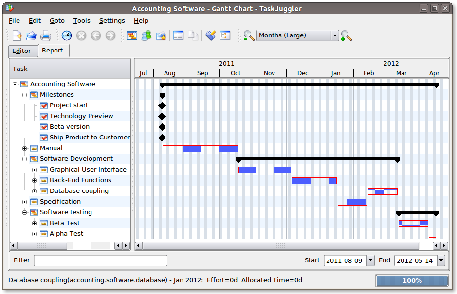
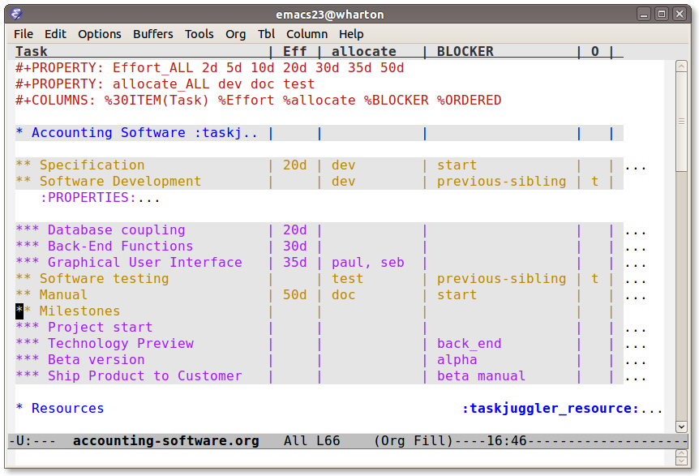

Кreiranje Gantt grafikona izvozom do TaskJuggler
Table of Contents
{{Nazad do Workq”s indeksa index}}
Thanks to Jovana Milutinovich (jovanam AT webhostinggeeks DOT com) for the translation.
Uvod
Org mod је odličan dodatak za projektno planiranje , kao što je Peter Jones pokazao u svom članku o projektnom planiranju. On prvo podeli projekat na karakteristike i zadatke, zatim procenjuje efekt i trud i iz toga prezentuje projektni plan. U ovom vodiču ćemo ići još jedan korak napred, dodelićemo resurse zadacima, zatim napraviti raspored zadataka i kreirati odgovarajući gantt grafikon za ovaj projekat.
Koristićemo TaskJuggler da bi rukovodili sa rasporedom zadataka, nivelisanjem izvora i kreiranjem bezbroj grafikona (kao Gantt grafikoni) za vašu mušteriju na vašem Pointy-haired Boss.
Planirajte svoj projekat
Startujete kao i obično tako što se projekat podeli na zadatke. Hajde da uzmemo sledeći primer gde imamo da kreiramo projetak u vezi sa računovodstvom (softver):
* Accounting Software , ** Specification , ** Software Development * Database coupling * Back-End Functions * Graphical User Interface , ** Software testing * Alpha Test * Beta Test , ** Manual , ** Milestones * Project start * Technology Preview * Beta version * Ship Product to Customer
Proceniti napor
Sada kada ste odgonetnuli zadatke, vreme je da procenimo napor za svaki
pojedinačni zadatak. Koristeći kolonu pregleda ovo može da se završi vrlo
efikasno i brzo. Takođe , pomaže da se definišu COLUMNS i standardne
vrednosti za “Effort property” kao što je pokazano na sledećoj slici:

Figure 1: Procenjujemo napor pomoću kolone pregleda
Rezultat vašeg projekta Org moda će izgledati nešto slično kao sledeće:
#+PROPERTY: Effort_ALL 2d 5d 10d 20d 30d 35d 50d #+COLUMNS: %70ITEM(Task) %Effort , * Accounting Software , ** Specification , :PROPERTIES: , :Effort: 20d , :END: , ** Software Development , * Database coupling , :PROPERTIES: , :Effort: 20d , :END: , * Back-End Functions , :PROPERTIES: , :Effort: 30d , :END: , * Graphical User Interface , :PROPERTIES: , :Effort: 35d , :END: , ** Software testing * Alpha Test , :PROPERTIES: , :Effort: 5d , :END: , * Beta Test , :PROPERTIES: , :Effort: 20d , :END: , ** Manual , :PROPERTIES: , :Effort: 50d , :END: , ** Milestones * Project start * Technology Preview * Beta version * Ship Product to Customer
Generisati Gantt grafikone
Sada, pre nego što eksportujete projekat do TaskJuggler-a, treba da kažete
izvozniku na kom drvetu može pronaći zadatke. Ovo radite tako što dodajete
tag do taskjuggler_project do člana “Accounting Softvare"1. Uradite ovo
pomeranjem do “Accounting Softvare” naslova i kucajte sledeće:
C-c C-c taskjuggler_project RET
Оvo vam dozvoljava da imate i druge članove za ovaj projekat kao što su uvod i opšte napomene.
Za izvoz projekta do TaskJuggler-a jednostavno ukucajte sledeće:
M-x org-export-as-taskjuggler-and-open
Оvo će vam otvoriti projekat u TaskJuggler-u kao što je i prikazano ispod.

Figure 2: Gantt grafikoni u TaskJuggler-UI
Kako nismo dodelili nijedan resurs za rad na ovom projektu, izvoznik pretpostavlja da ćete vi biti ti koji rade na projektu i dodeliće sve zadatke vama. Zadatak je serijalizovan, tj. izlazi u serijama tako da nećete imati da radite mnogo posla u isto vreme i resursi će biti nivelisani.
Dodeljivanje resursa
Sledeći korak je da napravite listu svih resursa koji rade na projektu i
dodeliti im zadatke. Kreirajte član za svaki resurs. Možete grupisati
resurse kreiranjem hijerarhije. Označite drvo resursa sa oznakom
taskjuggler_resource tako da izvoznik zna gde da gleda za resurs
definicije2.
* Resources :taskjuggler_resource: ** Developers , :PROPERTIES: , :resource_id: dev , :END: * Paul Smith , :PROPERTIES: , :resource_id: paul , :END: * Sébastien Bono , :PROPERTIES: , :resource_id: seb , :END: * Klaus Müller , ** Others * Peter Murphy , :PROPERTIES: , :resource_id: doc , :END: * Dim Sung , :PROPERTIES: , :resource_id: test , :END:
Kao što ćete i primetiti, takođe sam dodao resource_id properties za neke
resurse (grupe resursa). Koristiću te identifikatore za dodelu resursa
zadacima. Izvoznik će kreirati jedinstveni ids za resurse automatski3,
ali ako želite da koristite kratke forme bolje je da definišete
resource_id properties za vaše resurse. Ovo će vam takođe omogućiti da
definišete standardne vrednosti za dodelu kao što sledi:
#+PROPERTY: allocate_ALL dev doc test
Najlakši način za dodeljivanje resursa, je ponovo kolumna pregleda. Nema potrebe za dodeljivanjem resursa za svaki zadatak, jer je dodeljivanje nasledno u TaskJuggler4. Primetićete na ekranu ispod da neki zadaci imaju više nego jedan resurs dodeljen. TaskJuggler će izračunati trajanje svakog zadatka, baziranom na naporu i resursu koji rade na ovom zadatku.

Figure 3: Dodeljivanje resursa
Ako sada izvezemo projekat videćemo da je TaskJuggler organizovao neke zadatke paralelno (jer postoji nekoliko resursa koji mogu raditi paralelno). Pogledajte sliku ispod:

Figure 4: Gantt grafikoni sa višestrukim resursima
Očigledno moramo da definišemo zavisnosti između zadataka.
Odrediti zavisnosti
Ima nekoliko načina za definisanje zavisnosti između zadataka. Kada dolaze iz Org mod pozadine, vi ćete verovatno želeti da ih definišete koristeći postrojenja obezbeđena od strane Org moda, koji su ili:
- The
ORDEREDimovina koja vam dozvoljava i navodi vas da dečiji zadaci moraju biti kompletirani po tome kako se pojavljuju - The
BLOCKERimovina, koja vam dozvoljava i navodi vas da zadatak zavisi od- od prethodnog siblinga (prethodni-sibling)
- od bilo kog drugog zadatka, startujući
task_idproperty od prethodnika
Ponovo, ovo je verovatno najlakši način za definisanje zavisnosti koristeći kolumnu pregleda kao što je prikazano na ekranu ispod:

Figure 5: Definisanje zavisnosti korišćenjem kolumne pregleda
Na kraju, takođe postoji i zavisnost imovine koja je u korespodenciji sa
TaskJuggler terminologijom. Može se koristiti na isti način kao BLOCKER
imovina. Ovo je ilustrovano ispod gde je uzet primer “Softvare Development”
koji je blokiran od strane zadatka “Specification”, gde mora da čeka dok se
specifikacija ne završi. Zadatak “Softvare Development” je definisan kao
ORDERED, i svi podzadaci moraju biti kompletirani u sekvencama. Drugi
primer je prekretnica “Ship Product to Customer” koji čeka dok se ne završe
Beta i Ručni test.
#+PROPERTY: Effort_ALL 2d 5d 10d 20d 30d 35d 50d #+PROPERTY: allocate_ALL dev doc test #+COLUMNS: %30ITEM(Task) %Effort %allocate %BLOCKER %ORDERED , * Accounting Software :taskjuggler_project: , ** Specification , :PROPERTIES: , :Effort: 20d , :BLOCKER: start , :allocate: dev , :END: , ** Software Development , :PROPERTIES: , :ORDERED: t , :BLOCKER: previous-sibling , :priority: 1000 , :allocate: dev , :END: , * Database coupling , :PROPERTIES: , :Effort: 20d , :END: , * Back-End Functions , :PROPERTIES: , :Effort: 30d , :task_id: back_end , :END: , * Graphical User Interface , :PROPERTIES: , :Effort: 35d , :allocate: paul, seb , :END: , ** Software testing , :PROPERTIES: , :ORDERED: t , :BLOCKER: previous-sibling , :allocate: test , :END: * Alpha Test , :PROPERTIES: , :Effort: 5d , :task_id: alpha , :END: , * Beta Test , :PROPERTIES: , :Effort: 20d , :task_id: beta , :allocate: test, paul , :END: , ** Manual , :PROPERTIES: , :Effort: 50d , :task_id: manual , :BLOCKER: start , :allocate: doc , :END: , ** Milestones * Project start , :PROPERTIES: , :task_id: start , :END: , * Technology Preview , :PROPERTIES: , :BLOCKER: back_end , :END: , * Beta version , :PROPERTIES: , :BLOCKER: alpha , :END: , * Ship Product to Customer , :PROPERTIES: , :BLOCKER: beta manual , :END: , , * Resources :taskjuggler_resource: ** Developers , :PROPERTIES: , :resource_id: dev , :END: * Paul Smith , :PROPERTIES: , :resource_id: paul , :END: * Sébastien Bono , :PROPERTIES: , :resource_id: seb , :END: * Klaus Müller , ** Others * Peter Murphy , :PROPERTIES: , :resource_id: doc , :limits: { dailymax 6.4h } , :END: * Dim Sung , :PROPERTIES: , :resource_id: test , :END:
Ако izvozite primer iznad, TaskJuggler će napraviti raspored zadataka kao što je pokazano na ekranu ispod.

Figure 6: Gantt grafikoni za zavisnostima
Takođe TaskJuggler će vam dati pregled koliko će uposleni biti resursi i na čemu rade. Pogledajte ispod sliku:

Figure 7: Grafikon upotrebe resursa
Na posletku, možete generisati good-lookin project plans u PDF fajlove štampanjem iz TaskJuggler-a.Ovo će usrećiti svakog pointy-haired Boss.
Export of other properties
Obično, izvoznik upisuje imovinu člana koja je već poznata TaskJuggler-u (kao smene, bukiranja, efikasnost, start, knjiženje,odgovornost, reference, raspored, trajanje, prekretnica, beleške, kraj, itd… za zadatke) kao i TaskJuggler fajlu.
Оstala svojstva kao kompletnost ili prioritet su izvedene iz obuhvatnih informacija iz Org mod fajla. TODO izjava je pravi primer kompletnosti. Prioritet zadatka će biti determinisan kroz prioritet cookie.
Footnotes:
Možete kustomizirati tagove.
Оpet, naravno, ovaj tag može biti kustomiziran.
Preko downcasing naslova, zamene ne-ascii znakova sa “ i biranjem prve reči kao da je jedinstvena.
U TaskJuggler-u dodeljivanja su kumulativna, izvoznik međutim, dodaje neke kodove tako da su nasleđena dodeljivanja ignorisana kada se eksplicitno dodeljuju resursu.